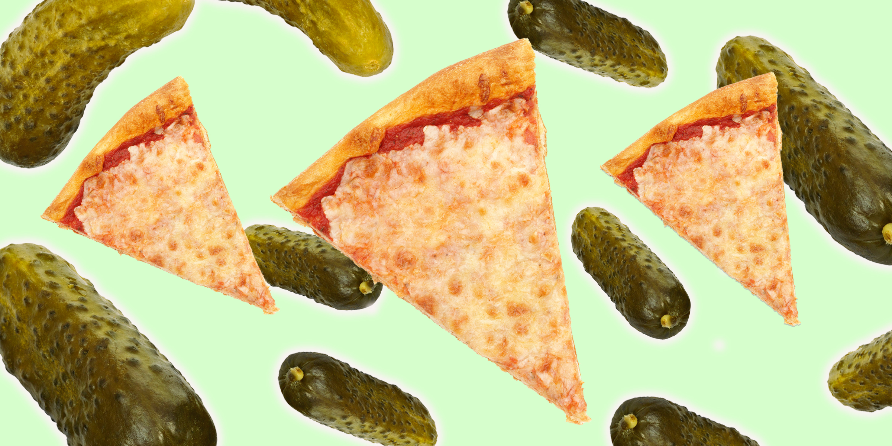

Pickle Pizza recipe

Description
With two layers of dill pickles and a splash of pickle juice in the sauce, this playful pizza recipe packs a serious pickle punch.
Ingredients
For the garlic-dill sauce
- 1/2 cup sour cream
- 1/4 cup mayonnaise
- 1 teaspoon dried dill
- 1 teaspoon pickle juice
- 1/2 teaspoon garlic powder
- 1/2 teaspoon kosher salt
- 1/4 teaspoon ground black pepper
For the pizza
- 2 (1-pound) balls pizza dough, homemade or store-bought, at room temperature
- All-purpose flour, for dusting the countertop
- Cornmeal, to dust the peel or baking sheet
- 3/4 cup garlic-dill sauce, divided
- 2 cups jarred dill pickle slices, patted dry, divided
- 2 cups shredded whole-milk low-moisture mozzarella cheese, divided
- 1/2 cup finely grated Parmesan cheese, divided
- 1 teaspoon dried dill, divided
Method for making it!
- Preheat the oven: Arrange a rack in the lower third of the oven and place an inverted rimmed baking sheet or pizza stone on it. Preheat the oven to 500°F.
- Prepare the sauce: In a medium bowl, whisk together the sour cream, mayonnaise, dried dill, dill pickle juice, garlic powder, salt, and pepper. Taste and adjust seasonings as needed.
- Stretch the dough: Take one ball of dough and flatten it with your hands on a lightly floured work surface. Starting at the center and working outwards, use your fingertips to press the dough into a 12 to 14-inch circle. You can also hold up the edges of the dough with your fingers, letting it hang and stretch, while working around the edges. Repeat with the second ball of dough.
- Build the pizza: Lightly sprinkle a pizza peel or rimless baking sheet with cornmeal. Transfer one prepared dough round to the peel. Spoon on half the sauce (about 1/4 cup plus 2 tablespoons) and spread it in an even layer using the back of a spoon, leaving 1/2-inch from the edge bare. Arrange 1/2 cup pickles over the sauce, followed by 1 cup mozzarella cheese and 1/4 cup Parmesan cheese. Top with 1/2 cup pickles and 1/2 teaspoon dried dill.
- Bake the pizza: Carefully sprinkle some cornmeal onto the preheated baking sheet or stone. Slide the pizza onto the sheet (it's okay if it's hanging over the edges slightly) and bake for 11 to 13 minutes, until the crust is golden brown and the cheese is bubbling.
- Repeat and serve: Use a pizza peel to remove the pizza from the oven and transfer it to a cooling rack. Prepare and bake the other pizza in the same manner.